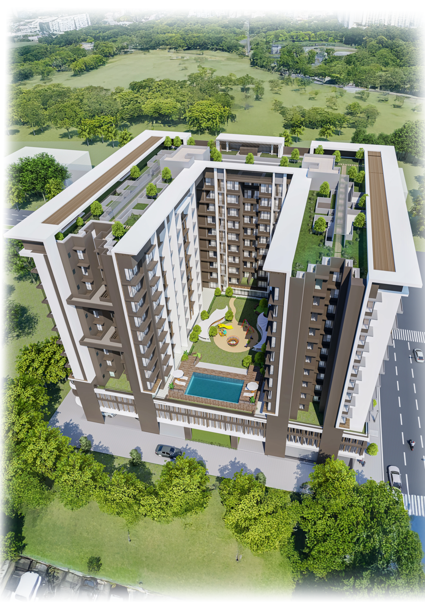
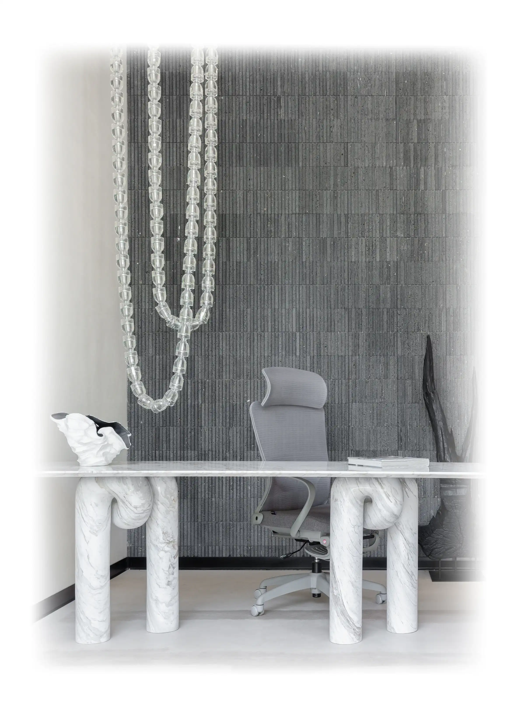
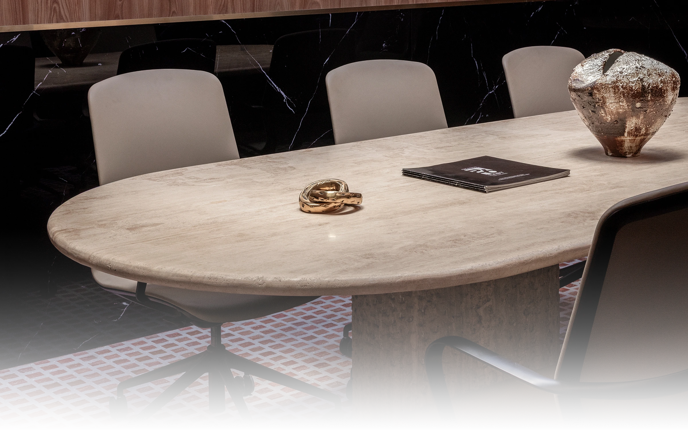

Restoring the discipline of interior design.

Studio — Byculla, Mumbai
Founded on a single conviction.
The Domus was founded in 2014 by Naveen Rao after eight years designing residential interiors for other studios. He observed a persistent tendency in Indian interior design to equate quality with quantity — more materials, more finishes, more decoration. The Domus was built as a deliberate correction.
The studio's name is taken from the Latin word for a private dwelling — not a house in the commercial sense, but a specific kind of made place. The Domus designs spaces for living, not for display.
Four things we will not compromise on.
Site before studio
Every project begins with an extended site visit. No design decisions are made before we understand the light.
Material honesty
We never specify a material to mimic another. Timber looks like timber; stone looks like stone.
Named craftsmen
Every bespoke element in a Domus project is made by a named artisan whose workshop we have visited.
Slow design
We maintain a small number of projects at any given time. Quality requires attention, not speed.
"We begin every project by asking what the space demands — not what the client wants to show."— Naveen Rao, Principal Designer
Twelve years in brief.
Studio founded
Began as a two-person practice in a converted mill house in Byculla, Mumbai.
First industry award
Recognised by the Indian Institute of Interior Designers for Residence Ferreira, Alibaug.
Goa studio opened
Second workspace opened to support growing coastal residential commissions.
Hospitality wing
Extended into boutique hospitality, starting with a nine-room coastal property in North Goa.
Team reaches 12
Deliberate decision to stop at twelve people — size is a design decision.
Material lab established
A dedicated space for testing plaster, stone, and timber finishes before specification.
Twelve designers.
One conviction.
A small, deliberate team who share a preference for considered work over volume.
Naveen Rao
Principal Designer
Ishika Verma
Head of Materials
Omar Sheikh
Project Director
Priya Iyer
Studio Manager
Ready to begin?
We accept a limited number of new commissions each year. Reach out early.